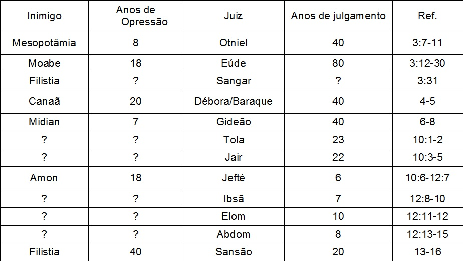

Panorama
do Antigo
Testamento
Adaptado de Edgar José Dallegrave
Livros
Históricos
Juízes
Livro de Juízes
Título:
- Shophetim (hebraico) = libertadores
- (LXX) = Juízes
Autor:
- Não há certeza
- Samuel?
Data:
- 1043 – 1004 a.C.
Versículo Chave:
- 21:25 (2:19; 17:6; 18:1; 19:1)
- Shophetim (hebraico) = libertadores
- (LXX) = Juízes
Autor:
- Não há certeza
- Samuel?
Data:
- 1043 – 1004 a.C.
Versículo Chave:
- 21:25 (2:19; 17:6; 18:1; 19:1)
Frase Chave:
- Ciclos de Falhas
Tema/Mensagem:
- A desobediência (idolatria, imoralidade) do
povo de Israel e sua conseqüência conforme
a aliança com Deus
Propósito:
- Revela a fidelidade e paciência de Deus,
contrastando com a infidelidade do Povo,
afim de motivá-lo e retornar para Deus
- Ciclos de Falhas
Tema/Mensagem:
- A desobediência (idolatria, imoralidade) do
povo de Israel e sua conseqüência conforme
a aliança com Deus
Propósito:
- Revela a fidelidade e paciência de Deus,
contrastando com a infidelidade do Povo,
afim de motivá-lo e retornar para Deus
Contribuição para o Cânon:
- Mostra a importância da obediência e da fidelidade a
Deus
- Dá uma explicação do por quê o povo pediu uma
monarquia
Fatos Interessantes:
- Sete apostasias, sete opressões, sete livramentos,
mostra a falha completa do povo e o amor e paciência
completo de Deus por Seu povo
- Juízes mostra que o ciclo de falhas está por toda a
terra (norte, sul, leste e oeste)
- Juízes é um triste livro da decadência total do povo
de Israel
- A época dos juízes, foi um dos capítulos mais longos
da história de Israel (400 anos)
- Mostra a importância da obediência e da fidelidade a
Deus
- Dá uma explicação do por quê o povo pediu uma
monarquia
Fatos Interessantes:
- Sete apostasias, sete opressões, sete livramentos,
mostra a falha completa do povo e o amor e paciência
completo de Deus por Seu povo
- Juízes mostra que o ciclo de falhas está por toda a
terra (norte, sul, leste e oeste)
- Juízes é um triste livro da decadência total do povo
de Israel
- A época dos juízes, foi um dos capítulos mais longos
da história de Israel (400 anos)
Pontos Notáveis:
- Ciclos de falha
- A evidente culpa recai sobre os pais, pois não
passaram aos filhos os decretos de Deus
- A falha em cumprir um decreto de Deus, expulsar
os outros povos da terra, levou o povo ao pecado,
à escravidão e a derrota
- Ciclos de falha
- A evidente culpa recai sobre os pais, pois não
passaram aos filhos os decretos de Deus
- A falha em cumprir um decreto de Deus, expulsar
os outros povos da terra, levou o povo ao pecado,
à escravidão e a derrota
Aplicações:
- Deus é fiel, por isso Ele cumpre a Sua palavra, inclusive
a conseqüência do pecado.
- Deus é paciente a amoroso com o Seu povo, sempre
responde ao clamor dEle.
- Os apetites e paixões dos homens podem levá-los a
destruição
- Aquele que vive segundo o seu próprio padrão, cuidado
- Os pais devem indicar o caminho correto aos seus filhos
- Deus usa pessoas fracas e falhas para cumprirem Seu
propósito
- O coração do homem é naturalmente inclinado para o
pecado
- O povo de Deus pode viver sem apreciar Sua presença
entre eles
- Deus é fiel, por isso Ele cumpre a Sua palavra, inclusive
a conseqüência do pecado.
- Deus é paciente a amoroso com o Seu povo, sempre
responde ao clamor dEle.
- Os apetites e paixões dos homens podem levá-los a
destruição
- Aquele que vive segundo o seu próprio padrão, cuidado
- Os pais devem indicar o caminho correto aos seus filhos
- Deus usa pessoas fracas e falhas para cumprirem Seu
propósito
- O coração do homem é naturalmente inclinado para o
pecado
- O povo de Deus pode viver sem apreciar Sua presença
entre eles
Josué / Juízes
Juízes
